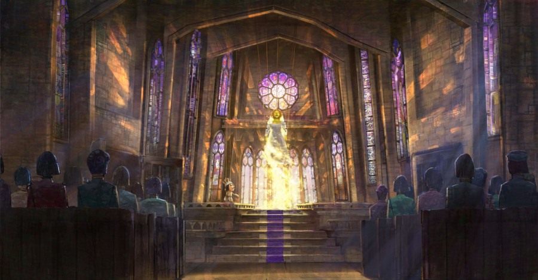
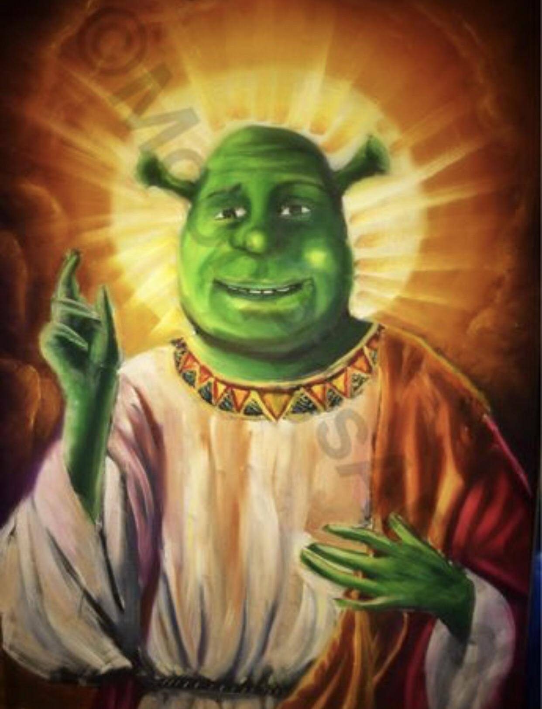

Welcome visitors and members to our community dedicated to acceptance, hope and our Lord Shrek! Join us in spreading hope, positivity, and benevolence from our most gracious savior!

The Altar

Our Saviour Shrek

Our Church
Mission Statement
Our mission is to celebrate and embody the principles of acceptance, hope, and benevolence taught in the tales of our most beloved ogre, Lord Shrek. We strive to create a community where all are welcome, regardless of where they come from or how they look, just as Shrek himself accepted all into his swamp. We are devoted to sharing these values with the world, inspiring others with Shrek's lesson of love, self-confidence, and true friendship. Like our Green Savior, we stand against any forms of judgement, prejudice, and fear. Join us in our mission to spread the wisdom of Shrek, transforming the world into a more accepting and hopeful place, one swamp at a time as we wait for the arrival of Shrek 5.